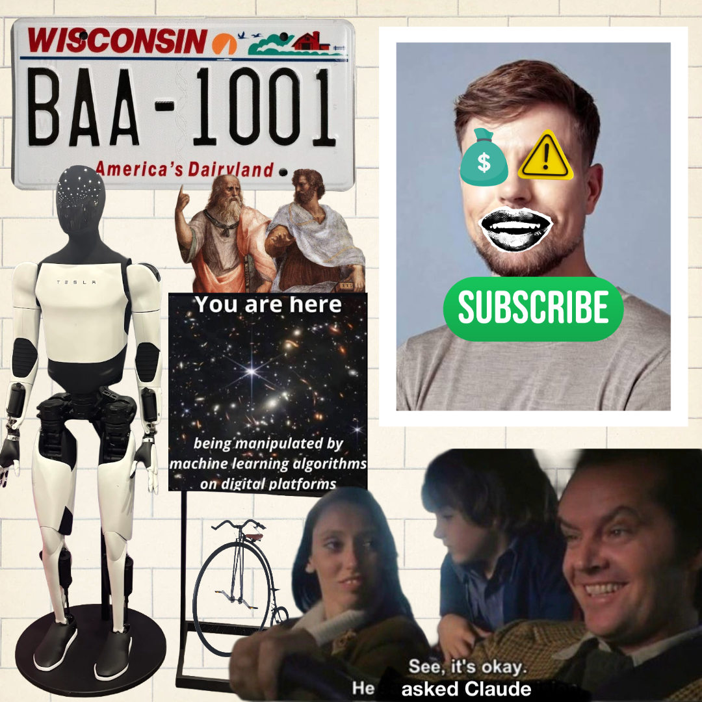

I am currently a PhD student in Rhetoric, Politics, and Culture with the Department of Communication Arts at the University of Wisconsin-Madison and a PhD minor in Science and Technology Studies (STS) with the Holtz Center. Before beginning my graduate journey, I recieved my BS in Computer Science and Communciation Arts from UW-Madison in 2020 and worked on B2B data translation/mapping and QA testing in corporate IT for several years. Unsatisfied and ready to begin anew, I returned to academia to pursue interdisciplinary, multi-method research on the rhetoric of digital technologies. I earned my MA in Communication Arts from UW-Madison in 2026.